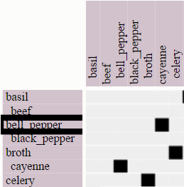
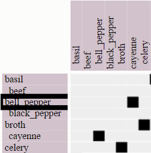

This is a research study. We want to understand how to best show network data (items with connections between them). We will use a matrix to show you how cooking ingredients (ex: salt, meat) are used in receipes together. All ingredients are listed once vertically and once horizontally. Two ingredients are connected (used in many receipes together) if there is a black dot in the matrix at their intersection. The example below shows that beans are often used with bacon, while cheddar is used on broccoli.
You can interact with the visualization. Zoom by using the mouse wheel. Pan by pressing the left mouse button down and
dragging (as in Google maps).
Select and deselect ingredients as answers by double-clicking on them (either in the row or column headers).
Select and deselect ingredients as highlights by clicking once on them (either in the row or column headers).
Mouse-over ingredients and links (the black dots) to highlight them.
Here is an example of a selected answer, a highlighted row, a hovered row and a hovered connection respectively.

We will ask you a few questions about this data. Please answer the questions as fast and accurate as possible by viewing and interacting with the visualization. There will be a countdown for each question; once it expires, we will hide the visualization. We will give you a turk-code to use for payment once you finish the study.
We will pay a $2 bonus to the user with the best overall accuracy/time.
The study includes two questions we consider to be easy enough that everyone can answer correctly. You need to answer both
correctly to receive payment.
| Questions | Answers |
 |
| Questions | Answers |
 |
|
|
Note
Probably red, because the ingredients are in the same cluster
or closer together while the blues aren't.
|